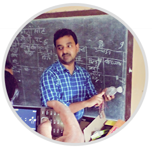
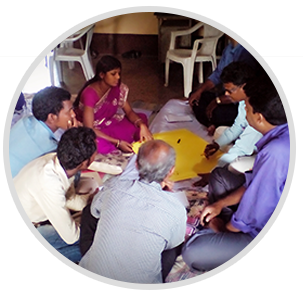
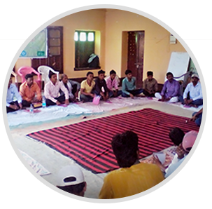
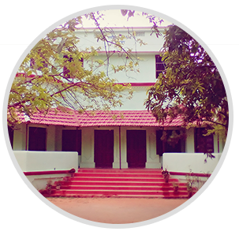

A Joint Initiative by

Learning Development Services
Course Curricula
A course curricula defines what set of skills needed to be imparted to the trainee based on his/her skill competency and market requirements. SkillGreen aims to create a balanced curricula by vetting with various external & internal stakeholders viz., the research institutes, the buyers & the trainee themselves to impart market oriented skills. This kind of approach enforces quality skill delivery to trainee and the skill providers to focus on their core competency. With a focus on practical’s rather than theory our course curricula presents a session-wise outcome assessment to gauge the performance.
Training Material & Manual
Due to lack of resources skill building institutes sometimes fails to innovate on their training methodology & delivery, resulting in poor knowledge retention by the trainees. With the help of its experienced in-house master trainer team, we delivers a customized solution for better learning experience on various vocations and emerging/frontier vocations for the rural areas by keeping a mix pedagogy of practical’s, role-plays & assignments.
Institutional Development Services
Train the Training Program
Trainers accomplish an important role in upgrading the skills of the workforce and learners to meet technological changes and challenges at the workplace. Trainers can excel in their job once they understand learning needs and capabilities of the learners. It is important because people of different age groups have different learning abilities , which should be considered by a trainer while training them. We provide Training to the trainers on basics of adult learning, entrepreneurship motivation & achievement, Pre-skill & Post-Skill Counselling, Business development facilitation of the trainees & post-skill handholding to the trainees.
Assessment, Certification & Affiliation Services
To achieve a quality skill delivery the skill building institutes need to certify their trainees after the assessment done by the third party agency. SkillGreen facilitates the skill building institution in establishing various linkages with the reputed affiliation & accreditation agencies with a win-win collaboration to achieve the skill building ecosystem synergies.
Entrepreneurship Development Services
Micro/Small Business Planning Support:
‘Planning is the first step of Execution’. Post-training entrepreneurs need handholding in planning their business, finances & resources. SkillGreen aims to equip the entrepreneurs with the required business support & market skills to be successfully self-employed.
Credit & Market Linkages
Linkages are very important at the Bottom of the Pyramid. Entrepreneurs need credit linkages to finance their operations & resources whereas a market to sell their foods & services. SkillGreen aims to create these services by creating business, financial & market plans for them.
Facilitation in Collectives
To achieve the economies of scale and possibilities of integration in the value chain, formation of collectives is needed. With the support of its livelihood consultants, SkillGreen can facilitate the institutional assessment, collective structure design & legalization, Operations design & management, Business Planning & setting up credit & market linkages for the community based collective organizations.
Research & Policy Advocacy Services
Skill Gap Assessment
As the adage goes “what cannot be measured cannot be improved". At SkillGreen Global we have a strong research team that track numbers to the last mile. The skill gap studies here give a granular knowledge of where our focus must be and helps in identifying the skill set which is necessary to impart to the trainee. The skill gap reports can also help the donor agencies to align their program objectives & outcomes.
Trade Identification
With the help of our research team, we can identify the rural trades/courses by sensing the market available, traditional skill set, up skilling required, infusion of technology, availability of natural resources & personal assists to design the programs which are people-centric and have high income generating capabilities. The trades identified are significant in their native context and provides possibilities of self-employment & entrepreneurship for the rural target groups.
Value Chain Studies
To map the value created by each value chain player for a certain trade and facilitate the correct entrepreneurship model for the trainees we conduct the value chain studies. Our value chain studies recommends the correct strategy and value chain intervention points for the agencies to work upon.